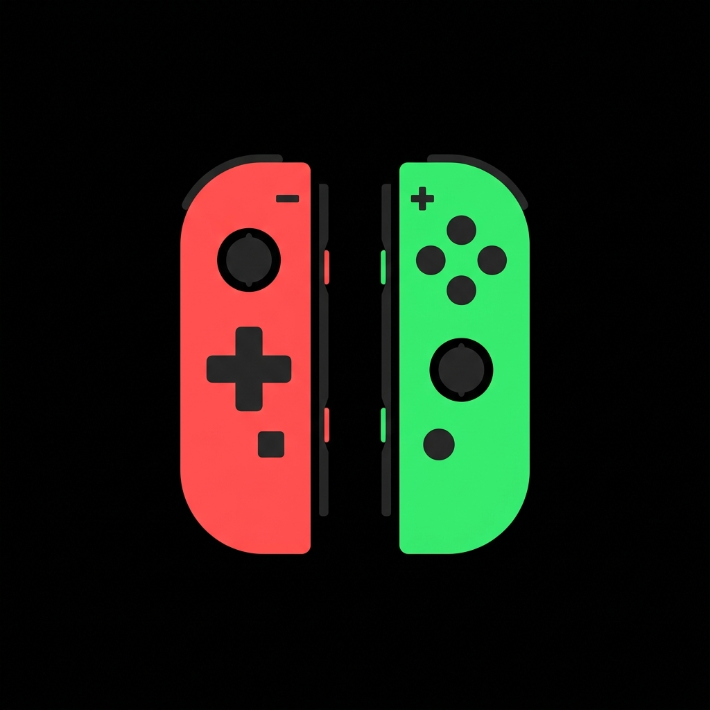

TOCK LABS
Desarrollo de aplicaciones móviles, plataformas web y extensiones para navegadores con enfoque en procesamiento local, rendimiento y privacidad.
I. Aplicación Móvil: Afinador Simples
Google Play Store • Versión 1.2.1
Afinador Simples es una suite acústica profesional para músicos de escenario, estudio y ensayo. Reúne tres herramientas fundamentales en una sola interfaz limpia y sin fricción:
- Afinador Cromático de Alta Precisión: Detección matemática en tiempo real con lectura exacta en Hertz (Hz) y desviación de centésimas.
- Metrónomo Profesional: Control de compases interactivos, tiempos clásicos italianos (Largo, Andante, Moderato, Allegro, Presto) y subdivisiones rítmicas.
- Grabador de Ensayos Integrado: Captura de audio de alta fidelidad con visualización de onda sonora viva y reproducción en bucle sin salir de la app.
Incluye afinación especializada para el Cuatro Venezolano con su tradicional afinación reentrante (Cambur Pintón: La3, Re4, Fa#4, Si3), además de Guitarra (6 cuerdas), Bajo Eléctrico (4 y 5 cuerdas con Si subgrave), Ukelele, Cavaquinho, Mandolina, Banjo (5 cuerdas), Violín, Violonchelo y Modo Cromático libre.
II. Plataformas Web & Publicaciones
Herramientas en Línea & Portales Técnicos
TockBlog
Comparativas Técnicas, Análisis y Hardware 3DPlataforma técnica independiente dedicada a comparativas rigurosas, análisis de hardware y accesorios de impresión 3D (Creality, Bambu Lab, Anycubic, Sunlu), secadores de filamento y guías prácticas basadas en datos de rendimiento reales para optimizar la fabricación aditiva.
TockTexture Studio
GameDev Texture Processor • 100% Client-SideMotor de procesamiento y optimización de texturas para videojuegos que opera de manera 100% local en el navegador mediante Web Workers. Diseñado para preparar assets listos para motores (Unity, Unreal Engine, Godot) con escalado Power of Two (POT), inversión Y-Flip en Normal Maps, corrección de Alpha Bleed y empaquetado de canales PBR / RMA.
III. Extensiones de Navegador
Publicadas en Chrome Web StoreTockTexture Studio
Texture Tool para Game DevelopersExtensión de productividad para desarrolladores de videojuegos. Permite invocar la suite de herramientas de TockTexture rápidamente en cualquier pestaña para inspeccionar, redimensionar a POT y empacar canales sin salir del flujo de trabajo del navegador.
IAssetflow
AI E-Commerce Media & Catalog AssistantExtensión de productividad para e-commerce. Permite extraer imágenes y videos en alta resolución desde marketplaces (AliExpress, Amazon, Walmart) y utilizar IA para generar títulos SEO, descripciones optimizadas y catálogos en formato CSV compatibles con Shopify y WooCommerce en 1 clic.
IV. Filosofía del Estudio
En Tock Labs creemos en la honestidad del software independiente: herramientas que hacen exactamente lo que prometen con rapidez y ligereza. Todo el procesamiento de audio, imágenes y datos se ejecuta de forma estrictamente local en tu propio dispositivo; no implementamos telemetría invasiva, no exigimos inicios de sesión innecesarios y respetamos plenamente la privacidad de tu equipo.